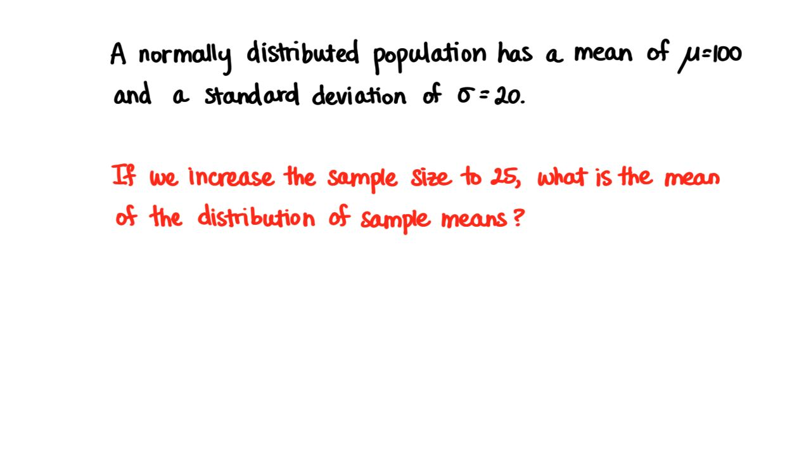

习题集 7: 抽样分布
Back to Home
01. 1. 中心极限定理
02. 2. 样本均值的位置
03. 3. 平均差异
04. 4. 增加样本量
05. 5. 标准误差
06. 6. n 和 σ
07. 7. n 和 x-bar
08. 8. 样本均值的均值
09. 9. 标准误差
10. 10. Z 值
11. 11. 概率
12. 12. 均值 n = 25
13. 13. 标准误差
14. 14. 概率
15. 15. 概率减小
16. 16. 总体分布形状
17. 17. 抽样分布形状
18. 18. 抽样分布均值
19. 19. 抽样分布的标准偏差
20. 20. 哪个分布？
21. 21. 更多还是更少？
22. 挑战 22. 样本量是多少？
Back to Home
12. 12. 均值 n = 25
均值 n = 25
Start Quiz:

INSTRUCTOR NOTE:
一个正态分布的总体的均值为 100，标准偏差为 20。如果我们把样本量增大到 25，样本均值的分布的均值是多少？
Next Concept